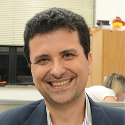
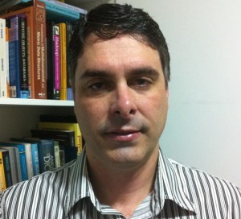
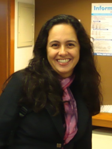
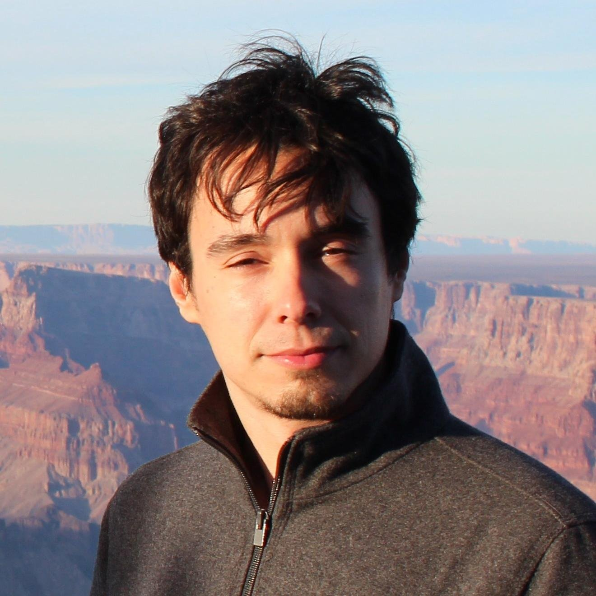

Tema: Big Data & Analytics - Aplicações
Participantes: Angelo Ciarlini (EMC) , Tiago Albineli Motta (Globo.com) e Victor Teixeira de Almeida (Petrobras)
Moderadora: Fernanda Baião (UNIRIO)
Este painel será realizado no dia 22/10 com horário e local a serem definidos.

Angelo Ciarlini possui graduação em Engenharia de Computação pela Pontifícia Universidade Católica do Rio de Janeiro (1991) , mestrado em Informática pela Pontifícia Universidade Católica do Rio de Janeiro (1994) e doutorado em Informática pela Pontifícia Universidade Católica do Rio de Janeiro (1999) . Atualmente é Professor Adjunto da Universidade Federal do Estado do Rio de Janeiro e Membro de corpo editorial da iSys: Revista Brasileira de Sistemas de Informação. Tem experiência na área de Ciência da Computação , com ênfase em Sistemas de Computação. Atuando principalmente nos seguintes temas: Inteligência Artificial, Planejamento e Reconhecimento de Planos, Simulação, Entretenimento, Programação em Lógica e Suporte a Decisão.

Vitor Teixeira de Almeida é Analista de Sistemas pleno na Petrobras. Atua na Arquitetura Tecnológica de TIC. Mestre em Bancos de dados, pela COPPE/UFRJ. Doutor em Bancos de Dados, pela Universidade de Hagen, Alemanha. Passou um ano sabático (2013) como pós-doutor na Universidade de Washington, Seattle, EUA, no Projeto Myria – uma plataforma de big data como serviço na nuvem. Especialista em Gerenciamento de grandes volumes de dados e tecnologias de big data.

Fernanda Baião é professora associada da Universidade Federal do Estado do Rio de Janeiro (UNIRIO), onde está desde 2004. É doutora (2001) e mestre (1997) em Engenharia de Sistemas e Computação pelo Instituto Alberto Luiz Coimbra de Pós Graduação e Pesquisa de Engenharia (COPPE) da Universidade Federal do Rio de Janeiro (UFRJ). Seus interesses de pesquisa têm como foco principal a gestão de informações, variando desde aspectos conceituais (modelagem conceitual bem fundamentada, ontologias de fundamentação) a gerência de dados em ambientes distribuídos e paralelos (execução de workflows científicos intensivos em dados, integração de informações e alinhamento de ontologias). Fernanda Baião participa de diversos comitês de programa de conferências e revistas nacionais e internacionais, além de integrar a equipe de pesquisa em projetos de pesquisa nacionais (incluindo o INCT em Ciência na Web) e internacionais (em cooperação com a União Européia).

Tiago Albineli Motta Full Stack Software Developer na Globo.com. Desenvolvendo software há mais de quinze anos, nove deles na Globo.com, Tiago já trabalhou com sistemas desktop, mobile, web e atualmente participa do time de Big Data do portal, focado em recomendação de conteúdo personalizado. Nas horas vagas desenvolve aplicativos mobile, mantém o site Web Democracia e viaja pelo mundo.